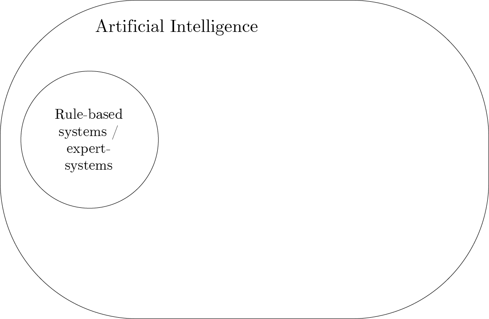
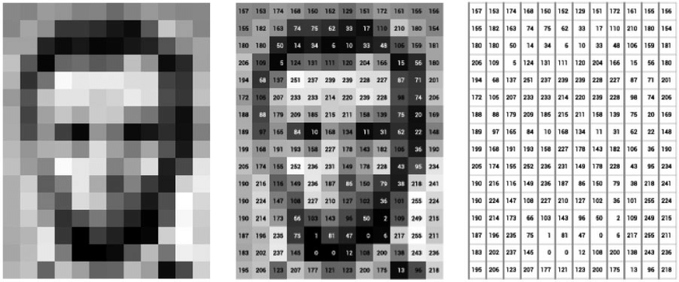

An introduction to AI for biostatisticians
BMS-Aned seminar
Department of Data Science Methods, Julius Center, University Medical Center Utrecht
2024-09-26
About
- University Medical Center Utrecht
- Division: Julius Center for Health Sciences and Primary Care
- Department: Data Science & Biostatistics
- Sub-department: Data Science Methods
- Department: Data Science & Biostatistics
- Division: Julius Center for Health Sciences and Primary Care
- Background:
- physics (BSc.)
- medicine (MD.)
- machine learning / causal inference in healthcare (PhD.)
- epidemiology / biostatistics (MSc.)
- Work on:
- causal inference and machine learning in health care
- methods and applications
Disclaimer
- of course, I used AI to help with the slides
- generate tikz diagrams with github copilot
- write text and equations with github copilot
- generate vector illustrations in adobe illustrator
- generate png images with Bing chat
- no competing interests
Today’s talk
- What is AI? History / Definitions
- What is Machine Learning? What are ML tasks?
- What is ‘Deep Learning’?
- What is a large-language model like chatGPT?
What is AI? History / Definitions
Definition
What is AI?
Artificial Intelligence is the branch of computer science that focuses on creating systems capable of performing tasks that typically require human intelligence. (Russell and Norvig 2020)
- These tasks include: learning, reasoning, problem-solving, perception, natural language understanding, and decision-making.
- AI systems can be designed to operate autonomously, adapt to new inputs, and improve their performance over time.
Early Milestones
- 1940s: Concept of AI emerged with Alan Turing’s work on computation and intelligence.
- 1956: The term “Artificial Intelligence” was coined at the Dartmouth Conference by John McCarthy.
- 1960s-1970s: Early AI programs focused on solving algebra, proving theorems, and playing games (e.g., Chess).
Key Developments
- 1980s: Introduction of expert systems (rule-based systems for decision making).
- 1990s: Machine learning began gaining traction, allowing AI systems to learn from data.
- 2010s: Deep learning and neural networks revolutionized AI, enabling breakthroughs in areas like image recognition, natural language processing, and more.
AI landscape: what is AI?

Rule-based systems are AI
- rule: all cows are animals
- observation: this is a cow \(\to\) it is an animal
- applications in health care:
- medication interaction checkers
- bedside patient monitors
- e.g. if heart rate > 100, alert nurse
What is Machine Learning? What are ML tasks?
What is Machine Learning?
Machine Learning is a subset of artificial intelligence that involves the use of algorithms and statistical models to enable computers to perform tasks without explicit instructions. Instead, they rely on patterns and inference from data. (Samuel 1959)
What tasks can we perform with machine learning?
Assume we have this data
| i | length | weight | sex |
|---|---|---|---|
| 1 | 137 | 30 | boy |
| 2 | 122 | 24 | girl |
| 3 | 101 | 18 | girl |
| … | … | … | … |
We typically assume these data are (i.i.d.) samples from some unknown distribution \(p(l,w,s)\):
\[l_i,w_i,s_i \sim p(l,w,s)\]
ML tasks: generation
- formulate a model for joint distribution \(p_{\theta}\)
- statistics: ‘small’ model family
- machine learning: ‘large’ model family
- use samples to optimize \(\theta\)
- generate new samples
\[l_j,w_j,s_j \sim p_{\theta}(l,w,s)\]
| task | |
|---|---|
| generation | \(l_j,w_j,s_j \sim p_{\theta}(l,w,s)\) |
- application: simulate data for power calculations, privacy-preserving data sharing
ML tasks: conditional generation
use samples to learn model for conditional distribution \(p\) \[ l_j,w_j \sim p_{\theta}(l,w|s=\text{boy}) \]
| task | |
|---|---|
| generation | \(l_j,w_j,s_j \sim p_{\theta}(l,w,s)\) |
| conditional generation | \(l_j,w_j \sim p_{\theta}(l,w|s=\text{boy})\) |
- application: imputation, question answering
ML tasks: conditional generation 2
use samples to learn model for conditional distribution \(p\) of one variable \[ s_j \sim p_{\theta}(s|l=l',w=w') \]
| task | |
|---|---|
| generation | \(l_j,w_j,s_j \sim p_{\theta}(l,w,s)\) |
| conditional generation | \(l_j,w_j \sim p_{\theta}(l,w|s=\text{boy})\) |
ML tasks: discrimination / classification

call this one variable outcome and - classify when majority of generated samples are of a certain class - or: have a model that outputs expected values \[ s_j = p_{\theta}(s|l=l',w=w') > 0.5 \]
| task | |
|---|---|
| generation | \(l_j,w_j,s_j \sim p_{\theta}(l,w,s)\) |
| conditional generation | \(l_j,w_j \sim p_{\theta}(l,w|s=\text{boy})\) |
| discrimination | \(p_{\theta}(s|l=l_i,w=w_i) > 0.5\) |
- application: prediction, diagnosis
ML tasks: reinforcement learning
- e.g. computers playing games
- typically requires many experiments, maybe not too useful in health care

What is ‘Deep Learning’?
Neural Networks and Deep Learning
From Linear Regression …
\[y = \sum_{i=0}^5 x_i \beta_i\]
- optimize \(\beta_i\) to minimize mean squared error, e.g. using second-order methods
Neural Networks and Deep Learning
… to ‘Deep’ Learning
\[\begin{align} h_i &= w_{0i} + w_{1i} x_1 + \ldots \\ h_i &= g(h_i) \\ y &= \sum_{i=1}^3 h_i w_i \end{align}\]
- sticked \(h_i\) between input and output
- \(g\) is a non-linear function: each \(h_i\) is a non-linear transformation of the input
- renamed \(\beta_i\) (‘coefficients’) to \(w_{0i}\) and \(w_i\) (‘weights’)
Why would neural networks work?
- true underlying relationships may be non-linear
- universal approximation theorem: a neural network with one hidden layer of sufficient width can approximate any continuous function
- problems:
- no longer convex optimization
- typical second-order optimizers scale quadratically or worse with number of parameters
- deterministic computation, but not easily understandable (black box)
Training neural networks
- use framework to define ‘forward-pass’ of network (e.g. PyTorch, TensorFlow, Keras, Jax)
- deep learning: initialize parameters randomly, use gradient descent (first-order) methods
- define loss function (e.g. mean squared error, cross-entropy (a.k.a. log-loss))
- use optimizer to minimize loss function (e.g. Stochastic Gradient Descent, Adam)
Stochastic gradient descent
\[L(\theta) = \sum_{i=1}^n \ell(y_i, f(x_i;\theta))\]
- take mini-batch of size \(m << n\)
- calculate loss on mini-batch and approximate gradient:
\[\nabla L(\theta) \approx \frac{1}{m} \sum_{i=1}^m \nabla \ell(y_i, f(x_i;\theta))\]
- update parameter one step
\[\theta_{t+1} = \theta_t - \alpha \nabla L(\theta)\]

https://www.kaggle.com/code/ryanholbrook/stochastic-gradient-descent
Training neural networks
- big networks require much memory and computation: do parallel on graphics processing units (GPUs) with mini-batches of data (i.e. stochastic gradient descent)
- train on training data, validate on validation data
- after all tuning is done, evaluate on test data
- how to prevent over-fitting?
Regularization
- regularization:
- L1 (lasso) / L2 (Ridge): add penalty to weights
Early stopping

Regularization
- regularization:
- L1 (lasso) / L2 (Ridge): add penalty to weights
- early stopping: stop training when validation error starts increasing
- random initialization: initialize weights randomly
- also:
- dropout: randomly set some weights to zero
- batch normalization: normalize inputs of each layer
- data augmentation: increase diversity of training data
Parameter counting is a bad proxy for model complexity in neural networks
Whereas in regression models, model complexity is well-captured by the number of parameters, this is not the case for neural networks.
There are specialized neural network architectures for different types of data
Convolutional Neural Networks
Image as matrix of pixel values
DOI: 10.1093/llc/fqy085
Convolutional Neural Networks
Convolution operation
Convolutional Neural Networks
Images have local structure

Convolutional Neural Networks
CNNs build hierarchical features with local invariant structure
Where would CNNs be useful in healthcare?
- images crucial importance in many healthcare setting, e.g. dermatology, radiology
- take lung cancer diagnosis on chest radiographs
- traditional statistical approach: ask radiologist to summarize medical image with some key features
- tumor size, location
- outcome: benign or malignant
- CNN approach: learn directly from images to outcome
- learn representation while doing so
- incorporate domain knowledge (e.g. invariances to e.g. translations)
- traditional statistical approach: ask radiologist to summarize medical image with some key features
deep learning for cell counting (Moen et al. 2019)
What is a large-language model like chatGPT?
Neural Networks for Sequence data
- many data are sequences: text, time series, DNA
- specific architectures for sequence data
- Recurrent Neural Networks (RNNs)
- natural language processing: Transformers (Vaswani et al. 2023)
chatGPT: a stochastic auto-regressive conditional generator with a chatbot interface
- trained by predicting the next <…> (word)
- in a large corpus of text
- with a large model
- for a long time on expensive hardware
- post-processed to optimize user experience (remove offensive language, etc.)
- present test-user with two generated answers, ask which is better
- if user picks one, use that as training signal

auto-regressive conditional generation:
\[\begin{align} \text{word}_1 &\sim p_{\text{chatGPT}}(\text{word}|\text{prompt}) \end{align}\]
auto-regressive conditional generation:
Prompt=“Frank went to the bar and”
\[\begin{align} \color{green}{had} &\sim p_{\text{chatGPT}}(\text{word}|\text{Frank went to the bar and}) \end{align}\]
auto-regressive conditional generation:
Prompt=“Frank went to the bar and”
\[\begin{align} \color{green}{had} &\sim p_{\text{chatGPT}}(\text{word}|\text{Frank went to the bar and})\\ \color{orange}{a} &\sim p_{\text{chatGPT}}(\text{word}|\text{Frank went to the bar and } \color{green}{had}) \end{align}\]
auto-regressive conditional generation:
Prompt=“Frank went to the bar and”
\[\begin{align} \color{green}{had} &\sim p_{\text{chatGPT}}(\text{word}|\text{Frank went to the bar and})\\ \color{orange}{a} &\sim p_{\text{chatGPT}}(\text{word}|\text{Frank went to the bar and } \color{green}{had})\\ \color{red}{drink} &\sim p_{\text{chatGPT}}(\text{word}|\text{Frank went to the bar and } \color{green}{had} \ \color{orange}{a}) \end{align}\]
auto-regressive conditional generation:
Prompt=“Frank went to the bar and”
\[\begin{align} \color{green}{had} &\sim p_{\text{chatGPT}}(\text{word}|\text{Frank went to the bar and})\\ \color{orange}{a} &\sim p_{\text{chatGPT}}(\text{word}|\text{Frank went to the bar and } \color{green}{had})\\ \color{red}{drink} &\sim p_{\text{chatGPT}}(\text{word}|\text{Frank went to the bar and } \color{green}{had} \ \color{orange}{a})\\ \text{STOP} &\sim p_{\text{chatGPT}}(\text{word}|\text{Frank went to the bar and } \color{green}{had} \ \color{orange}{a} \ \color{red}{drink}) \end{align}\]
stochastic auto-regressive conditional generation:
Prompt=“Frank went to the bar and”
\[\begin{align} \color{green}{met} &\sim p_{\text{chatGPT}}(\text{word}|\text{Frank went to the bar and}) \end{align}\]
stochastic auto-regressive conditional generation:
Prompt=“Frank went to the bar and”
\[\begin{align} \color{green}{met} &\sim p_{\text{chatGPT}}(\text{word}|\text{Frank went to the bar and})\\ \color{orange}{a} &\sim p_{\text{chatGPT}}(\text{word}|\text{Frank went to the bar and } \color{green}{met}) \end{align}\]
stochastic auto-regressive conditional generation:
Prompt=“Frank went to the bar and”
\[\begin{align} \color{green}{met} &\sim p_{\text{chatGPT}}(\text{word}|\text{Frank went to the bar and})\\ \color{orange}{a} &\sim p_{\text{chatGPT}}(\text{word}|\text{Frank went to the bar and } \color{green}{met})\\ \color{red}{friend} &\sim p_{\text{chatGPT}}(\text{word}|\text{Frank went to the bar and } \color{green}{met} \ \color{orange}{a}) \end{align}\]
stochastic auto-regressive conditional generation:
Prompt=“Frank went to the bar and”
\[\begin{align} \color{green}{met} &\sim p_{\text{chatGPT}}(\text{word}|\text{Frank went to the bar and})\\ \color{orange}{a} &\sim p_{\text{chatGPT}}(\text{word}|\text{Frank went to the bar and } \color{green}{met})\\ \color{red}{friend} &\sim p_{\text{chatGPT}}(\text{word}|\text{Frank went to the bar and } \color{green}{met} \ \color{orange}{a})\\ \text{STOP} &\sim p_{\text{chatGPT}}(\text{word}|\text{Frank went to the bar and } \color{green}{met} \ \color{orange}{a} \ \color{red}{friend}) \end{align}\]
GPT-4 scale (underlying current ChatGPT)


For complex tasks, neural networks keep getting better with:
- more compute resources
- bigger data
- bigger models (enabled by data and compute)
scaling over time
Neural Network Architectures
- common theme:
- use an architecture that fits the data type well
- images with local structure: CNNs
- time series: RNNs
- scale!
rule-based AI versus chatGPT
- rule-based AI:
- explicit rules
- no learning, restricted to rules
- dependable, verifiable
- LLMs:
- no explicit rules
- learned from data, can ‘learn’ almost anything
- not dependable, not verifiable
- produces text that may have appeared in training data (‘the internet’)
What we don’t know about chatGPT
- what data was it trained on, what is the architecture?
- does it have a world model? does it understand?
- does next-word prediction imply understanding?
- can we interrogate it to self-explain: chain of thought tests?
- are these explanations faithful?
- are these explanations correct?
What might LLMs be useful for in health care?
- anything with expert control:
- administration:
- draft discharge letters
- thinking ‘outside the box’:
- generate hypotheses (potential diagnoses)
- administration:
- more dangerous
- education
- unreliable
- decision support
AI wrap-up
- been around for long
- became very successful in past decades with deep learning
- images: convolutional neural networks
- LLMs: next-word prediction
- scaling: more data, more compute, bigger models
References
©Wouter van Amsterdam — WvanAmsterdam — wvanamsterdam.com/talks